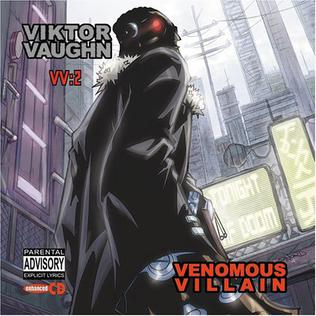
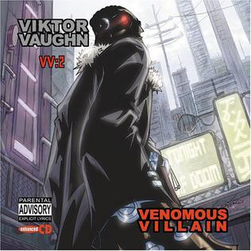
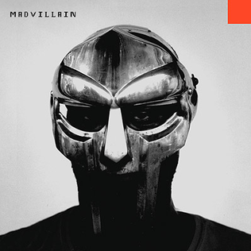
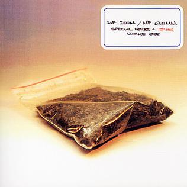
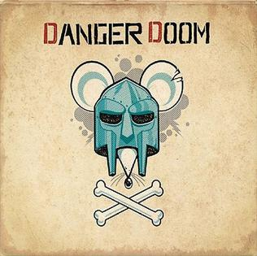
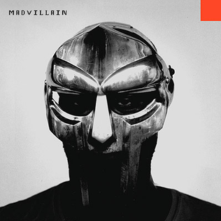
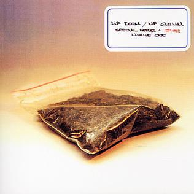
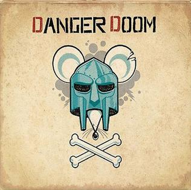
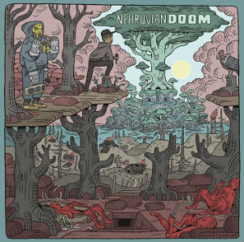
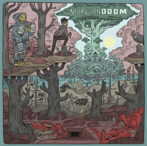

MF DOOM—Masked Visionary, Rhyme-Bending Supervillain, and Hip-Hop Legend
Daniel Dumile (January 9, 1971 – October 31, 2020), best known by his stage name MF Doom or simply Doom (both stylized in all caps), was a British-American rapper and record producer. Noted for his intricate wordplay, signature metal mask, and "supervillain" stage persona, Dumile became a major figure of underground hip hop in the 2000s. After his death, Variety described him as one of the scene's "most celebrated, unpredictable and enigmatic figures".
Born in London, Dumile moved to Long Island, New York, at a young age. He began his career in 1988 as a member of KMD, performing under the name Zev Love X; the group disbanded in 1993 upon the death of member DJ Subroc, Dumile's brother. After a hiatus, Dumile reemerged in the late 1990s, performing at open mic events while wearing a metal mask resembling that of Marvel Comics supervillain Doctor Doom, who is depicted on the cover of his 1999 debut solo album Operation: Doomsday. He adopted the MF Doom persona and rarely made unmasked public appearances thereafter.
Between 2003 and 2005, Dumile released four solo studio albums, including the critically acclaimed Mm..Food (2004), and two collaborative albums, using the MF Doom moniker and the pseudonyms King Geedorah and Viktor Vaughn. His sixth and final solo album, Born Like This, was released in 2009. Though he lived the majority of his life in the United States, he never gained American citizenship and was denied reentry in 2010 after returning from an international tour. He relocated to London and, in his final years, worked mostly in collaboration with various other rappers.
 


 





 
